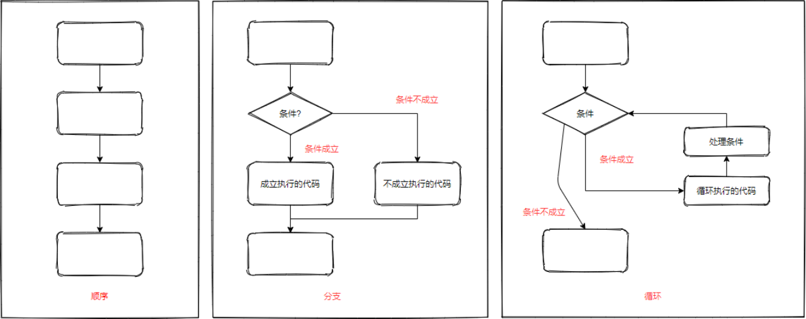

<!DOCTYPE lake>
<ul list="uc76d8b87"><li data-lake-id="u6584be22" fid="u3373dbc4" id="u6584be22"><span data-lake-id="u0a6a64bf" id="u0a6a64bf" style="color: rgb(51, 51, 51)">顺序 : 从上向下， 顺序执行代码</span></li><li data-lake-id="u48a9f92a" fid="u3373dbc4" id="u48a9f92a"><span data-lake-id="u32af56b6" id="u32af56b6" style="color: rgb(51, 51, 51)">分支 : 根据条件判断， 决定执行代码的分支</span></li><li data-lake-id="u7aa1953b" fid="u3373dbc4" id="u7aa1953b"><span data-lake-id="u3c33b12b" id="u3c33b12b" style="color: rgb(51, 51, 51)">循环 : 让特定代码重复的执行</span></li></ul><p data-lake-id="uc1a2c142" id="uc1a2c142"></p>